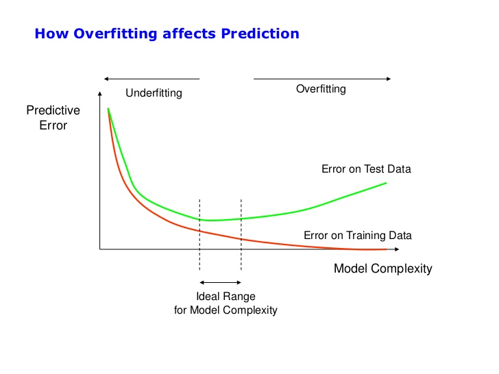

<!DOCTYPE html>
<html lang="en"><head>
<script src="../site_libs/clipboard/clipboard.min.js"></script>
<script src="../site_libs/quarto-html/tabby.min.js"></script>
<script src="../site_libs/quarto-html/popper.min.js"></script>
<script src="../site_libs/quarto-html/tippy.umd.min.js"></script>
<link href="../site_libs/quarto-html/tippy.css" rel="stylesheet">
<link href="../site_libs/quarto-html/light-border.css" rel="stylesheet">
<link href="../site_libs/quarto-html/quarto-syntax-highlighting-37eea08aefeeee20ff55810ff984fec1.css" rel="stylesheet" id="quarto-text-highlighting-styles"><meta charset="utf-8">
  <meta name="generator" content="quarto-1.7.32">

  <meta name="author" content="Miguel Fonseca">
  <title>MPAAAF – Hyperparameter Tuning</title>
  <meta name="apple-mobile-web-app-capable" content="yes">
  <meta name="apple-mobile-web-app-status-bar-style" content="black-translucent">
  <meta name="viewport" content="width=device-width, initial-scale=1.0, maximum-scale=1.0, user-scalable=no, minimal-ui">
  <link rel="stylesheet" href="../site_libs/revealjs/dist/reset.css">
  <link rel="stylesheet" href="../site_libs/revealjs/dist/reveal.css">
  <style>
    code{white-space: pre-wrap;}
    span.smallcaps{font-variant: small-caps;}
    div.columns{display: flex; gap: min(4vw, 1.5em);}
    div.column{flex: auto; overflow-x: auto;}
    div.hanging-indent{margin-left: 1.5em; text-indent: -1.5em;}
    ul.task-list{list-style: none;}
    ul.task-list li input[type="checkbox"] {
      width: 0.8em;
      margin: 0 0.8em 0.2em -1em; /* quarto-specific, see https://github.com/quarto-dev/quarto-cli/issues/4556 */ 
      vertical-align: middle;
    }
    /* CSS for syntax highlighting */
    html { -webkit-text-size-adjust: 100%; }
    pre > code.sourceCode { white-space: pre; position: relative; }
    pre > code.sourceCode > span { display: inline-block; line-height: 1.25; }
    pre > code.sourceCode > span:empty { height: 1.2em; }
    .sourceCode { overflow: visible; }
    code.sourceCode > span { color: inherit; text-decoration: inherit; }
    div.sourceCode { margin: 1em 0; }
    pre.sourceCode { margin: 0; }
    @media screen {
    div.sourceCode { overflow: auto; }
    }
    @media print {
    pre > code.sourceCode { white-space: pre-wrap; }
    pre > code.sourceCode > span { text-indent: -5em; padding-left: 5em; }
    }
    pre.numberSource code
      { counter-reset: source-line 0; }
    pre.numberSource code > span
      { position: relative; left: -4em; counter-increment: source-line; }
    pre.numberSource code > span > a:first-child::before
      { content: counter(source-line);
        position: relative; left: -1em; text-align: right; vertical-align: baseline;
        border: none; display: inline-block;
        -webkit-touch-callout: none; -webkit-user-select: none;
        -khtml-user-select: none; -moz-user-select: none;
        -ms-user-select: none; user-select: none;
        padding: 0 4px; width: 4em;
        color: #aaaaaa;
      }
    pre.numberSource { margin-left: 3em; border-left: 1px solid #aaaaaa;  padding-left: 4px; }
    div.sourceCode
      { color: #003b4f; background-color: #f1f3f5; }
    @media screen {
    pre > code.sourceCode > span > a:first-child::before { text-decoration: underline; }
    }
    code span { color: #003b4f; } /* Normal */
    code span.al { color: #ad0000; } /* Alert */
    code span.an { color: #5e5e5e; } /* Annotation */
    code span.at { color: #657422; } /* Attribute */
    code span.bn { color: #ad0000; } /* BaseN */
    code span.bu { } /* BuiltIn */
    code span.cf { color: #003b4f; font-weight: bold; } /* ControlFlow */
    code span.ch { color: #20794d; } /* Char */
    code span.cn { color: #8f5902; } /* Constant */
    code span.co { color: #5e5e5e; } /* Comment */
    code span.cv { color: #5e5e5e; font-style: italic; } /* CommentVar */
    code span.do { color: #5e5e5e; font-style: italic; } /* Documentation */
    code span.dt { color: #ad0000; } /* DataType */
    code span.dv { color: #ad0000; } /* DecVal */
    code span.er { color: #ad0000; } /* Error */
    code span.ex { } /* Extension */
    code span.fl { color: #ad0000; } /* Float */
    code span.fu { color: #4758ab; } /* Function */
    code span.im { color: #00769e; } /* Import */
    code span.in { color: #5e5e5e; } /* Information */
    code span.kw { color: #003b4f; font-weight: bold; } /* Keyword */
    code span.op { color: #5e5e5e; } /* Operator */
    code span.ot { color: #003b4f; } /* Other */
    code span.pp { color: #ad0000; } /* Preprocessor */
    code span.sc { color: #5e5e5e; } /* SpecialChar */
    code span.ss { color: #20794d; } /* SpecialString */
    code span.st { color: #20794d; } /* String */
    code span.va { color: #111111; } /* Variable */
    code span.vs { color: #20794d; } /* VerbatimString */
    code span.wa { color: #5e5e5e; font-style: italic; } /* Warning */
  </style>
  <link rel="stylesheet" href="../site_libs/revealjs/dist/theme/quarto-7f656d197a6d4d458420565151872bca.css">
  <link href="../site_libs/revealjs/plugin/quarto-line-highlight/line-highlight.css" rel="stylesheet">
  <link href="../site_libs/revealjs/plugin/reveal-menu/menu.css" rel="stylesheet">
  <link href="../site_libs/revealjs/plugin/reveal-menu/quarto-menu.css" rel="stylesheet">
  <link href="../site_libs/revealjs/plugin/reveal-chalkboard/font-awesome/css/all.css" rel="stylesheet">
  <link href="../site_libs/revealjs/plugin/reveal-chalkboard/style.css" rel="stylesheet">
  <link href="../site_libs/revealjs/plugin/quarto-support/footer.css" rel="stylesheet">
  <style type="text/css">
    .reveal div.sourceCode {
      margin: 0;
      overflow: auto;
    }
    .reveal div.hanging-indent {
      margin-left: 1em;
      text-indent: -1em;
    }
    .reveal .slide:not(.center) {
      height: 100%;
      overflow-y: auto;
    }
    .reveal .slide.scrollable {
      overflow-y: auto;
    }
    .reveal .footnotes {
      height: 100%;
      overflow-y: auto;
    }
    .reveal .slide .absolute {
      position: absolute;
      display: block;
    }
    .reveal .footnotes ol {
      counter-reset: ol;
      list-style-type: none; 
      margin-left: 0;
    }
    .reveal .footnotes ol li:before {
      counter-increment: ol;
      content: counter(ol) ". "; 
    }
    .reveal .footnotes ol li > p:first-child {
      display: inline-block;
    }
    .reveal .slide ul,
    .reveal .slide ol {
      margin-bottom: 0.5em;
    }
    .reveal .slide ul li,
    .reveal .slide ol li {
      margin-top: 0.4em;
      margin-bottom: 0.2em;
    }
    .reveal .slide ul[role="tablist"] li {
      margin-bottom: 0;
    }
    .reveal .slide ul li > *:first-child,
    .reveal .slide ol li > *:first-child {
      margin-block-start: 0;
    }
    .reveal .slide ul li > *:last-child,
    .reveal .slide ol li > *:last-child {
      margin-block-end: 0;
    }
    .reveal .slide .columns:nth-child(3) {
      margin-block-start: 0.8em;
    }
    .reveal blockquote {
      box-shadow: none;
    }
    .reveal .tippy-content>* {
      margin-top: 0.2em;
      margin-bottom: 0.7em;
    }
    .reveal .tippy-content>*:last-child {
      margin-bottom: 0.2em;
    }
    .reveal .slide > img.stretch.quarto-figure-center,
    .reveal .slide > img.r-stretch.quarto-figure-center {
      display: block;
      margin-left: auto;
      margin-right: auto; 
    }
    .reveal .slide > img.stretch.quarto-figure-left,
    .reveal .slide > img.r-stretch.quarto-figure-left  {
      display: block;
      margin-left: 0;
      margin-right: auto; 
    }
    .reveal .slide > img.stretch.quarto-figure-right,
    .reveal .slide > img.r-stretch.quarto-figure-right  {
      display: block;
      margin-left: auto;
      margin-right: 0; 
    }
  </style>
</head>
<body class="quarto-light">
  <div class="reveal">
    <div class="slides">

<section id="title-slide" class="quarto-title-block center">
  <h1 class="title">Hyperparameter Tuning</h1>
  <p class="subtitle">Finding the Best Model Configuration</p>

<div class="quarto-title-authors">
<div class="quarto-title-author">
<div class="quarto-title-author-name">
Miguel Fonseca 
</div>
</div>
</div>

</section><section id="TOC">
<nav role="doc-toc"> 
<h2 id="toc-title">Table of contents</h2>
<ul>
<li><a href="#/hyperparameters" id="/toc-hyperparameters">Hyperparameters</a></li>
<li><a href="#/categories-of-hyperparameters" id="/toc-categories-of-hyperparameters">Categories of Hyperparameters</a></li>
<li><a href="#/underfitting-vs-overfitting" id="/toc-underfitting-vs-overfitting">Underfitting vs Overfitting</a></li>
<li><a href="#/tuning" id="/toc-tuning">Tuning</a></li>
<li><a href="#/tuning-strategies" id="/toc-tuning-strategies">Tuning Strategies</a></li>
</ul>
</nav>
</section>
<section>
<section id="hyperparameters" class="title-slide slide level1 center">
<h1>Hyperparameters</h1>

</section>
<section id="motivation" class="slide level2">
<h2>Motivation</h2>
<p>Machine learning models have two types of parameters:</p>
<ul>
<li>Model parameters
<ul>
<li>learned automatically
<ul>
<li><em>e.g.</em> neural network weights</li>
</ul></li>
</ul></li>
<li>Hyperparameters
<ul>
<li>defined before training</li>
<li>control model behaviour</li>
<li>Examples:
<ul>
<li>learning rate</li>
<li>tree depth</li>
<li>number of layers</li>
<li>regularisation strength</li>
</ul></li>
</ul></li>
</ul>
<div title="Goal">
<div class="callout callout-none no-icon callout-titled callout-style-simple">
<div class="callout-body">
<div class="callout-title">
<p><strong>Goal</strong></p>
</div>
<div class="callout-content">
<p>Find hyperparameters that maximize generalization performance.</p>
</div>
</div>
</div>
</div>
</section>
<section id="hyperparameters-vs-parameters" class="slide level2">
<h2>Hyperparameters vs Parameters</h2>
<table class="caption-top">
<thead>
<tr class="header">
<th>Type</th>
<th>Examples</th>
<th>Learned?</th>
</tr>
</thead>
<tbody>
<tr class="odd">
<td>Model parameters</td>
<td>weights, biases</td>
<td>Yes</td>
</tr>
<tr class="even">
<td>Hyperparameters</td>
<td>learning rate, depth</td>
<td>No</td>
</tr>
</tbody>
</table>
<p>Hyperparameters control:</p>
<ul>
<li>model capacity</li>
<li>training dynamics</li>
<li>regularisation strength</li>
</ul>
</section></section>
<section>
<section id="categories-of-hyperparameters" class="title-slide slide level1 center">
<h1>Categories of Hyperparameters</h1>

</section>
<section id="scientific-hyperparameters" class="slide level2">
<h2>Scientific hyperparameters</h2>
<blockquote>
<p>Model architecture.</p>
</blockquote>
<p>Examples:</p>
<ul>
<li>number of layers</li>
<li>kernel size</li>
<li>tree depth</li>
</ul>
</section>
<section id="nuisance-hyperparameters" class="slide level2">
<h2>Nuisance hyperparameters</h2>
<blockquote>
<p>Affect training but not model architecture.</p>
</blockquote>
<p>Examples:</p>
<ul>
<li>learning rate</li>
<li>batch size</li>
<li>optimizer parameters</li>
</ul>
</section>
<section id="fixed-hyperparameters" class="slide level2">
<h2>Fixed hyperparameters</h2>
<blockquote>
<p>Chosen once and rarely tuned.</p>
</blockquote>
<p>Examples:</p>
<ul>
<li>activation function</li>
<li>optimizer choice</li>
</ul>
</section>
<section id="genetic-algorithms-for-hyperparameter-optimization" class="slide level2 scrollable">
<h2>Genetic Algorithms for Hyperparameter Optimization</h2>
<h3 id="idea">Idea</h3>
<p>Treat each <strong>hyperparameter configuration</strong> as an individual in a population.</p>
<p>Example genome:</p>
<p><span class="math display">\[
\theta = (learning\ rate,\ batch\ size,\ dropout,\ layers)
\]</span></p>
<p>Each individual is evaluated by training the model and measuring <strong>validation performance</strong>.</p>
<div class="fragment">
<h3 id="evolutionary-process">Evolutionary Process</h3>
<ol type="1">
<li><strong>Initialize population</strong> with random hyperparameters</li>
<li><strong>Evaluate fitness</strong></li>
</ol>
<p><span class="math display">\[
fitness = - \text{validation loss}
\]</span></p>
<ol start="3" type="1">
<li><strong>Selection</strong></li>
</ol>
<p>Choose best-performing individuals</p>
<ol start="4" type="1">
<li><strong>Crossover</strong></li>
</ol>
<p>Combine hyperparameters from two parents</p>
<ol start="5" type="1">
<li><strong>Mutation</strong></li>
</ol>
<p>Randomly change some hyperparameters</p>
<ol start="6" type="1">
<li>Repeat for multiple generations</li>
</ol>
</div>
<div class="fragment">
<h3 id="advantages">Advantages</h3>
<p>✔ Works with <strong>non-differentiable objectives</strong><br>
✔ Naturally handles <strong>mixed hyperparameters</strong><br>
✔ Global search</p>
</div>
<h3 id="limitations">Limitations</h3>
<p>✖ Computationally expensive<br>
✖ Slower convergence than Bayesian optimisation</p>
</section></section>
<section>
<section id="underfitting-vs-overfitting" class="title-slide slide level1 center">
<h1>Underfitting vs Overfitting</h1>

</section>
<section id="the-underfitting-vs-overfitting-problem" class="slide level2">
<h2>The Underfitting vs Overfitting Problem</h2>
<div class="callout-info" title="Key idea">
<p>Model complexity must match the data.</p>
</div>
<p><strong>Underfitting</strong></p>
<ul>
<li>high bias</li>
<li>poor performance everywhere</li>
</ul>
<p><strong>Overfitting</strong></p>
<ul>
<li>high variance</li>
<li>poor generalization</li>
</ul>
</section>
<section id="train-vs-validation-loss-behaviour" class="slide level2">
<h2>Train vs Validation Loss Behaviour</h2>
<p>Typical behaviour:</p>
<p><strong>Good fit</strong></p>
<ul>
<li>training loss ↓</li>
<li>validation loss ↓</li>
</ul>
<p><strong>Overfitting</strong></p>
<ul>
<li>training loss ↓</li>
<li>validation loss ↑</li>
</ul>
<p><strong>Underfitting</strong></p>
<ul>
<li>both losses high</li>
</ul>
</section>
<section class="slide level2">


</section></section>
<section>
<section id="tuning" class="title-slide slide level1 center">
<h1>Tuning</h1>

</section>
<section id="role-of-hyperparameters" class="slide level2">
<h2>Role of Hyperparameters</h2>
<p>Hyperparameters control:</p>
<p><strong>Model capacity</strong></p>
<ul>
<li>number of layers</li>
<li>tree depth</li>
<li>number of neurons</li>
</ul>
<p><strong>Regularisation</strong></p>
<ul>
<li>L1 / L2 penalty</li>
<li>dropout</li>
</ul>
<p><strong>Optimization</strong></p>
<ul>
<li>learning rate</li>
<li>batch size</li>
<li>momentum</li>
</ul>
</section>
<section id="data-curation-and-feature-engineering" class="slide level2">
<h2>Data Curation and Feature Engineering</h2>
<blockquote>
<p>Hyperparameter tuning is not the only lever.</p>
</blockquote>
<p>Performance depends heavily on:</p>
<ul>
<li>Data curation
<ul>
<li>removing corrupted samples</li>
<li>class balancing</li>
<li>deduplication</li>
</ul></li>
<li>Feature engineering
<ul>
<li>normalization</li>
<li>feature selection</li>
<li>domain features</li>
</ul></li>
</ul>
<div title="Important rule">
<div class="callout callout-warning callout-titled callout-style-default">
<div class="callout-body">
<div class="callout-title">
<div class="callout-icon-container">
<i class="callout-icon"></i>
</div>
<p><strong>Important rule</strong></p>
</div>
<div class="callout-content">
<p>Better features often beat more complex models.</p>
</div>
</div>
</div>
</div>
</section>
<section id="hyperparameter-search-space" class="slide level2">
<h2>Hyperparameter Search Space</h2>
<p>Define a search space.</p>
<p>Example: <span class="math display">\[
\begin{eqnarray}
\verb|learning_rate| \in [1e-5 , 1e-1] \\
\verb|num_layers| \in {1,2,3,4} \\
\verb|batch_size| \in {16,32,64} \\
\verb|dropout| \in [0.0 , 0.5]
\end{eqnarray}
\]</span></p>
<p>Choosing a good search space is critical.</p>
</section>
<section id="exploration-vs-exploitation" class="slide level2">
<h2>Exploration vs Exploitation</h2>
<p>Two competing goals:</p>
<div title="Exploration">
<div class="callout callout-none no-icon callout-titled callout-style-simple">
<div class="callout-body">
<div class="callout-title">
<p><strong>Exploration</strong></p>
</div>
<div class="callout-content">
<p>Search new regions.</p>
</div>
</div>
</div>
</div>
<div title="Exploitation">
<div class="callout callout-none no-icon callout-titled callout-style-simple">
<div class="callout-body">
<div class="callout-title">
<p><strong>Exploitation</strong></p>
</div>
<div class="callout-content">
<p>Refine promising areas.</p>
</div>
</div>
</div>
</div>
<p>Good optimizers balance both.</p>
</section></section>
<section>
<section id="tuning-strategies" class="title-slide slide level1 center">
<h1>Tuning Strategies</h1>

</section>
<section id="grid-search" class="slide level2">
<h2>Grid Search</h2>
<p>Evaluate all combinations.</p>
<div title="Pros">
<div class="callout callout-tip callout-titled callout-style-default">
<div class="callout-body">
<div class="callout-title">
<div class="callout-icon-container">
<i class="callout-icon"></i>
</div>
<p><strong>Pros</strong></p>
</div>
<div class="callout-content">
<ul>
<li>simple</li>
</ul>
</div>
</div>
</div>
</div>
<div title="Cons">
<div class="callout callout-important callout-titled callout-style-default">
<div class="callout-body">
<div class="callout-title">
<div class="callout-icon-container">
<i class="callout-icon"></i>
</div>
<p><strong>Cons</strong></p>
</div>
<div class="callout-content">
<ul>
<li>expensive</li>
<li>scales poorly</li>
</ul>
</div>
</div>
</div>
</div>
</section>
<section id="random-search" class="slide level2">
<h2>Random Search</h2>
<p>Sample randomly from distributions.</p>
<div title="Pros">
<div class="callout callout-tip callout-titled callout-style-default">
<div class="callout-body">
<div class="callout-title">
<div class="callout-icon-container">
<i class="callout-icon"></i>
</div>
<p><strong>Pros</strong></p>
</div>
<div class="callout-content">
<ul>
<li>simple</li>
<li>explores more dimensions efficiently</li>
<li>often outperforms grid search</li>
</ul>
</div>
</div>
</div>
</div>
<div title="Cons">
<div class="callout callout-important callout-titled callout-style-default">
<div class="callout-body">
<div class="callout-title">
<div class="callout-icon-container">
<i class="callout-icon"></i>
</div>
<p><strong>Cons</strong></p>
</div>
<div class="callout-content">
<ul>
<li>expensive</li>
<li>scales poorly with dimensionality increase</li>
</ul>
</div>
</div>
</div>
</div>
</section>
<section id="bayesian-hyperparameter-optimization" class="slide level2 scrollable">
<h2>Bayesian Hyperparameter Optimization</h2>
<h3 id="problem">Problem</h3>
<p>Training a model with hyperparameters:</p>
<p><span class="math display">\[
\theta^* = \arg\min_{\theta} f(\theta)
\]</span></p>
<p>where</p>
<ul>
<li><span class="math inline">\(\theta\)</span> - hyperparameters<br>
</li>
<li><span class="math inline">\(f(\theta)\)</span> - validation loss after training</li>
</ul>
<p>Training the model is <strong>expensive</strong>, so we want to evaluate <strong>as few configurations as possible</strong>.</p>
<div class="fragment">
<h3 id="key-idea">Key Idea</h3>
<p>Instead of blind search, we <strong>build a probabilistic model of the objective function</strong>.</p>
<p>Typical surrogate models:</p>
<ul>
<li>Gaussian Processes</li>
<li>Tree Parzen Estimators (Optuna)</li>
<li>Random Forest Surrogates</li>
</ul>
</div>
<div class="fragment">
<h3 id="intuition">Intuition</h3>
<ol type="1">
<li>Train model with hyperparameters ( _1 )</li>
<li>Observe validation loss</li>
<li>Update surrogate model</li>
<li>Choose <strong>next hyperparameters intelligently</strong></li>
</ol>
</div>
</section>
<section id="bayesian-optimization-workflow" class="slide level2 scrollable">
<h2>Bayesian Optimization Workflow</h2>
<h3 id="algorithm">Algorithm</h3>
<ol type="1">
<li>Sample a few hyperparameters randomly</li>
<li>Fit a <strong>surrogate model</strong></li>
</ol>
<p><span class="math display">\[
\hat{f}(\theta)
\]</span></p>
<ol start="3" type="1">
<li>Use an <strong>acquisition function</strong> to choose next hyperparameters</li>
</ol>
<p>Common acquisition functions:</p>
<ul>
<li>Expected Improvement (EI)</li>
<li>Probability of Improvement</li>
<li>Upper Confidence Bound</li>
</ul>
<div class="fragment">
<h3 id="exploration-vs-exploitation-1">Exploration vs Exploitation</h3>
<p>The acquisition function balances:</p>
<table class="caption-top">
<thead>
<tr class="header">
<th>Exploration</th>
<th>Exploitation</th>
</tr>
</thead>
<tbody>
<tr class="odd">
<td>Try uncertain regions</td>
<td>Try promising regions</td>
</tr>
<tr class="even">
<td>Learn about space</td>
<td>Improve best result</td>
</tr>
</tbody>
</table>
</div>
<div class="fragment">
<h3 id="result">Result</h3>
<p>Bayesian optimisation finds <strong>good hyperparameters with far fewer trials</strong> than:</p>
<ul>
<li>Grid search</li>
<li>Random search</li>
</ul>
</div>
</section>
<section id="visual-intuition-of-bayesian-optimization" class="slide level2">
<h2>Visual Intuition of Bayesian Optimization</h2>

<h3 id="surrogate-model">Surrogate Model</h3>
<p>The expensive objective function (f()) is approximated by a probabilistic model:</p>
<p><span class="math display">\[
\hat{f}(\theta)
\]</span></p>
<p>Typically a <strong>Gaussian Process</strong>.</p>
<p>The model provides:</p>
<ul>
<li>predicted mean</li>
<li>uncertainty estimate</li>
</ul>
<div class="fragment">
<h3 id="acquisition-function">Acquisition Function</h3>
<p>The acquisition function selects the <strong>next hyperparameter configuration</strong>.</p>
<p>Example: <strong>Expected Improvement</strong></p>
<p><span class="math display">\[
EI(\theta) = \mathbb{E}[\max(f_{best} - f(\theta),0)]
\]</span></p>
</div>
<div class="fragment">
<h3 id="key-insight">Key Insight</h3>
<p>The next evaluation is chosen where we expect <strong>maximum improvement</strong>, balancing:</p>
<ul>
<li>promising regions<br>
</li>
<li>uncertain regions</li>
</ul>
</div>
</section>
<section id="hyperband-algorithm-for-hyperparameter-optimization" class="slide level2 scrollable">
<h2>Hyperband Algorithm for Hyperparameter Optimization</h2>
<h3 id="motivation-1">Motivation</h3>
<p>Training models with many hyperparameter configurations is <strong>expensive</strong>.</p>
<p>Instead of fully training every configuration, Hyperband:</p>
<blockquote>
<p>Quickly eliminates poor configurations and allocates resources to promising ones.</p>
</blockquote>
<div class="fragment">
<h3 id="core-idea">Core Idea</h3>
<p>Hyperband uses <strong>successive halving</strong>.</p>
<ol type="1">
<li>Start with <strong>many hyperparameter configurations</strong></li>
<li>Train each for a <strong>small number of epochs</strong></li>
<li>Keep the <strong>best fraction</strong></li>
<li>Increase training budget for survivors</li>
<li>Repeat until one configuration remains</li>
</ol>
</div>
<h3 id="example">Example</h3>
<table class="caption-top">
<thead>
<tr class="header">
<th>Round</th>
<th>Configurations</th>
<th>Training Epochs</th>
</tr>
</thead>
<tbody>
<tr class="odd">
<td>1</td>
<td>81</td>
<td>1</td>
</tr>
<tr class="even">
<td>2</td>
<td>27</td>
<td>3</td>
</tr>
<tr class="odd">
<td>3</td>
<td>9</td>
<td>9</td>
</tr>
<tr class="even">
<td>4</td>
<td>3</td>
<td>27</td>
</tr>
<tr class="odd">
<td>5</td>
<td>1</td>
<td>81</td>
</tr>
</tbody>
</table>
<p>Poor models are discarded early.</p>
<div class="fragment">
<h3 id="advantages-1">Advantages</h3>
<p>✔ Very efficient use of computation<br>
✔ Works well for deep learning<br>
✔ Parallelizable</p>
<h3 id="used-in">Used in</h3>
<ul>
<li><strong>Keras Tuner</strong></li>
<li><strong>Ray Tune</strong></li>
<li><strong>Google Vizier</strong></li>
</ul>
<hr>
<section id="example-1" class="title-slide slide level1 center">
<h1>Example</h1>

</section>
<section id="optuna" class="slide level2">
<h2>Optuna</h2>
<div id="4c94a9ea" class="cell" data-execution_count="1">
<div class="sourceCode cell-code" id="cb1"><pre class="sourceCode numberSource python number-lines code-with-copy"><code class="sourceCode python"><span id="cb1-1"><a></a><span class="im">from</span> sklearn.datasets <span class="im">import</span> make_regression</span>
<span id="cb1-2"><a></a><span class="im">import</span> optuna</span>
<span id="cb1-3"><a></a><span class="im">import</span> tensorflow <span class="im">as</span> tf</span>
<span id="cb1-4"><a></a><span class="im">from</span> tensorflow <span class="im">import</span> keras</span>
<span id="cb1-5"><a></a></span>
<span id="cb1-6"><a></a>X_train, y_train <span class="op">=</span> make_regression(</span>
<span id="cb1-7"><a></a>    n_samples<span class="op">=</span><span class="dv">100</span>, n_features<span class="op">=</span><span class="dv">5</span>, noise<span class="op">=</span><span class="fl">0.1</span></span>
<span id="cb1-8"><a></a>)</span>
<span id="cb1-9"><a></a>X_val, y_val <span class="op">=</span> make_regression(</span>
<span id="cb1-10"><a></a>    n_samples<span class="op">=</span><span class="dv">20</span>, n_features<span class="op">=</span><span class="dv">5</span>, noise<span class="op">=</span><span class="fl">0.1</span></span>
<span id="cb1-11"><a></a>)</span>
<span id="cb1-12"><a></a></span>
<span id="cb1-13"><a></a><span class="kw">def</span> objective(trial):</span>
<span id="cb1-14"><a></a></span>
<span id="cb1-15"><a></a>    learning_rate <span class="op">=</span> trial.suggest_float(</span>
<span id="cb1-16"><a></a>        <span class="st">"lr"</span>, <span class="fl">1e-5</span>, <span class="fl">1e-2</span>, log<span class="op">=</span><span class="va">True</span></span>
<span id="cb1-17"><a></a>    )</span>
<span id="cb1-18"><a></a></span>
<span id="cb1-19"><a></a>    n_units <span class="op">=</span> trial.suggest_int(<span class="st">"units"</span>, <span class="dv">32</span>, <span class="dv">128</span>)</span>
<span id="cb1-20"><a></a></span>
<span id="cb1-21"><a></a>    model <span class="op">=</span> keras.Sequential([</span>
<span id="cb1-22"><a></a>        keras.layers.Dense(n_units, activation<span class="op">=</span><span class="st">"relu"</span>),</span>
<span id="cb1-23"><a></a>        keras.layers.Dense(<span class="dv">1</span>)</span>
<span id="cb1-24"><a></a>    ])</span>
<span id="cb1-25"><a></a></span>
<span id="cb1-26"><a></a>    optimizer <span class="op">=</span> keras.optimizers.Adam(</span>
<span id="cb1-27"><a></a>        learning_rate<span class="op">=</span>learning_rate</span>
<span id="cb1-28"><a></a>    )</span>
<span id="cb1-29"><a></a></span>
<span id="cb1-30"><a></a>    model.<span class="bu">compile</span>(</span>
<span id="cb1-31"><a></a>        optimizer<span class="op">=</span>optimizer,</span>
<span id="cb1-32"><a></a>        loss<span class="op">=</span><span class="st">"mse"</span></span>
<span id="cb1-33"><a></a>    )</span>
<span id="cb1-34"><a></a></span>
<span id="cb1-35"><a></a>    model.fit(X_train, y_train,</span>
<span id="cb1-36"><a></a>              validation_data<span class="op">=</span>(X_val,y_val),</span>
<span id="cb1-37"><a></a>              epochs<span class="op">=</span><span class="dv">10</span>,</span>
<span id="cb1-38"><a></a>              verbose<span class="op">=</span><span class="dv">0</span>)</span>
<span id="cb1-39"><a></a></span>
<span id="cb1-40"><a></a>    loss <span class="op">=</span> model.evaluate(X_val, y_val)</span>
<span id="cb1-41"><a></a></span>
<span id="cb1-42"><a></a>    <span class="cf">return</span> loss</span></code><button title="Copy to Clipboard" class="code-copy-button"><i class="bi"></i></button></pre></div>
</div>
<hr>
</section>
<section id="running-optuna" class="slide level2">
<h2>Running Optuna</h2>
<div id="cc668ba6" class="cell" data-execution_count="2">
<div class="sourceCode cell-code" id="cb2"><pre class="sourceCode numberSource python number-lines code-with-copy"><code class="sourceCode python"><span id="cb2-1"><a></a>study <span class="op">=</span> optuna.create_study(</span>
<span id="cb2-2"><a></a>    direction<span class="op">=</span><span class="st">"minimize"</span></span>
<span id="cb2-3"><a></a>)</span>
<span id="cb2-4"><a></a></span>
<span id="cb2-5"><a></a>study.optimize(objective, n_trials<span class="op">=</span><span class="dv">50</span>)</span>
<span id="cb2-6"><a></a></span>
<span id="cb2-7"><a></a><span class="bu">print</span>(study.best_params)</span></code><button title="Copy to Clipboard" class="code-copy-button"><i class="bi"></i></button></pre></div>
<div class="cell-output cell-output-stdout">
<div class="ansi-escaped-output">
<pre><span class="ansi-bold">1/1</span> <span class="ansi-green-fg">━━━━━━━━━━━━━━━━━━━━</span> <span class="ansi-bold">0s</span> 5ms/step - loss: 14962.9561

<span class="ansi-bold">1/1</span> <span class="ansi-green-fg">━━━━━━━━━━━━━━━━━━━━</span> <span class="ansi-bold">0s</span> 10ms/step - loss: 14962.9561
</pre>
</div>
</div>
<div class="cell-output cell-output-stdout">
<div class="ansi-escaped-output">
<pre><span class="ansi-bold">1/1</span> <span class="ansi-green-fg">━━━━━━━━━━━━━━━━━━━━</span> <span class="ansi-bold">0s</span> 5ms/step - loss: 14768.0264

<span class="ansi-bold">1/1</span> <span class="ansi-green-fg">━━━━━━━━━━━━━━━━━━━━</span> <span class="ansi-bold">0s</span> 10ms/step - loss: 14768.0264
</pre>
</div>
</div>
<div class="cell-output cell-output-stdout">
<div class="ansi-escaped-output">
<pre><span class="ansi-bold">1/1</span> <span class="ansi-green-fg">━━━━━━━━━━━━━━━━━━━━</span> <span class="ansi-bold">0s</span> 5ms/step - loss: 14886.0645

<span class="ansi-bold">1/1</span> <span class="ansi-green-fg">━━━━━━━━━━━━━━━━━━━━</span> <span class="ansi-bold">0s</span> 10ms/step - loss: 14886.0645
</pre>
</div>
</div>
<div class="cell-output cell-output-stdout">
<div class="ansi-escaped-output">
<pre><span class="ansi-bold">1/1</span> <span class="ansi-green-fg">━━━━━━━━━━━━━━━━━━━━</span> <span class="ansi-bold">0s</span> 5ms/step - loss: 14937.0566

<span class="ansi-bold">1/1</span> <span class="ansi-green-fg">━━━━━━━━━━━━━━━━━━━━</span> <span class="ansi-bold">0s</span> 10ms/step - loss: 14937.0566
</pre>
</div>
</div>
<div class="cell-output cell-output-stdout">
<div class="ansi-escaped-output">
<pre><span class="ansi-bold">1/1</span> <span class="ansi-green-fg">━━━━━━━━━━━━━━━━━━━━</span> <span class="ansi-bold">0s</span> 6ms/step - loss: 14949.5361

<span class="ansi-bold">1/1</span> <span class="ansi-green-fg">━━━━━━━━━━━━━━━━━━━━</span> <span class="ansi-bold">0s</span> 11ms/step - loss: 14949.5361
</pre>
</div>
</div>
<div class="cell-output cell-output-stdout">
<div class="ansi-escaped-output">
<pre><span class="ansi-bold">1/1</span> <span class="ansi-green-fg">━━━━━━━━━━━━━━━━━━━━</span> <span class="ansi-bold">0s</span> 6ms/step - loss: 14183.3535

<span class="ansi-bold">1/1</span> <span class="ansi-green-fg">━━━━━━━━━━━━━━━━━━━━</span> <span class="ansi-bold">0s</span> 10ms/step - loss: 14183.3535
</pre>
</div>
</div>
<div class="cell-output cell-output-stdout">
<div class="ansi-escaped-output">
<pre><span class="ansi-bold">1/1</span> <span class="ansi-green-fg">━━━━━━━━━━━━━━━━━━━━</span> <span class="ansi-bold">0s</span> 5ms/step - loss: 14944.9688

<span class="ansi-bold">1/1</span> <span class="ansi-green-fg">━━━━━━━━━━━━━━━━━━━━</span> <span class="ansi-bold">0s</span> 10ms/step - loss: 14944.9688
</pre>
</div>
</div>
<div class="cell-output cell-output-stdout">
<div class="ansi-escaped-output">
<pre><span class="ansi-bold">1/1</span> <span class="ansi-green-fg">━━━━━━━━━━━━━━━━━━━━</span> <span class="ansi-bold">0s</span> 5ms/step - loss: 14924.1562

<span class="ansi-bold">1/1</span> <span class="ansi-green-fg">━━━━━━━━━━━━━━━━━━━━</span> <span class="ansi-bold">0s</span> 10ms/step - loss: 14924.1562
</pre>
</div>
</div>
<div class="cell-output cell-output-stdout">
<div class="ansi-escaped-output">
<pre><span class="ansi-bold">1/1</span> <span class="ansi-green-fg">━━━━━━━━━━━━━━━━━━━━</span> <span class="ansi-bold">0s</span> 5ms/step - loss: 14917.3799

<span class="ansi-bold">1/1</span> <span class="ansi-green-fg">━━━━━━━━━━━━━━━━━━━━</span> <span class="ansi-bold">0s</span> 10ms/step - loss: 14917.3799
</pre>
</div>
</div>
<div class="cell-output cell-output-stdout">
<div class="ansi-escaped-output">
<pre><span class="ansi-bold">1/1</span> <span class="ansi-green-fg">━━━━━━━━━━━━━━━━━━━━</span> <span class="ansi-bold">0s</span> 5ms/step - loss: 14962.5625

<span class="ansi-bold">1/1</span> <span class="ansi-green-fg">━━━━━━━━━━━━━━━━━━━━</span> <span class="ansi-bold">0s</span> 10ms/step - loss: 14962.5625
</pre>
</div>
</div>
<div class="cell-output cell-output-stdout">
<div class="ansi-escaped-output">
<pre><span class="ansi-bold">1/1</span> <span class="ansi-green-fg">━━━━━━━━━━━━━━━━━━━━</span> <span class="ansi-bold">0s</span> 5ms/step - loss: 14541.9814

<span class="ansi-bold">1/1</span> <span class="ansi-green-fg">━━━━━━━━━━━━━━━━━━━━</span> <span class="ansi-bold">0s</span> 10ms/step - loss: 14541.9814
</pre>
</div>
</div>
<div class="cell-output cell-output-stdout">
<div class="ansi-escaped-output">
<pre><span class="ansi-bold">1/1</span> <span class="ansi-green-fg">━━━━━━━━━━━━━━━━━━━━</span> <span class="ansi-bold">0s</span> 5ms/step - loss: 12933.3008

<span class="ansi-bold">1/1</span> <span class="ansi-green-fg">━━━━━━━━━━━━━━━━━━━━</span> <span class="ansi-bold">0s</span> 10ms/step - loss: 12933.3008
</pre>
</div>
</div>
<div class="cell-output cell-output-stdout">
<div class="ansi-escaped-output">
<pre><span class="ansi-bold">1/1</span> <span class="ansi-green-fg">━━━━━━━━━━━━━━━━━━━━</span> <span class="ansi-bold">0s</span> 5ms/step - loss: 11663.2803

<span class="ansi-bold">1/1</span> <span class="ansi-green-fg">━━━━━━━━━━━━━━━━━━━━</span> <span class="ansi-bold">0s</span> 10ms/step - loss: 11663.2803
</pre>
</div>
</div>
<div class="cell-output cell-output-stdout">
<div class="ansi-escaped-output">
<pre><span class="ansi-bold">1/1</span> <span class="ansi-green-fg">━━━━━━━━━━━━━━━━━━━━</span> <span class="ansi-bold">0s</span> 5ms/step - loss: 11271.0879

<span class="ansi-bold">1/1</span> <span class="ansi-green-fg">━━━━━━━━━━━━━━━━━━━━</span> <span class="ansi-bold">0s</span> 10ms/step - loss: 11271.0879
</pre>
</div>
</div>
<div class="cell-output cell-output-stdout">
<div class="ansi-escaped-output">
<pre><span class="ansi-bold">1/1</span> <span class="ansi-green-fg">━━━━━━━━━━━━━━━━━━━━</span> <span class="ansi-bold">0s</span> 5ms/step - loss: 11682.3379

<span class="ansi-bold">1/1</span> <span class="ansi-green-fg">━━━━━━━━━━━━━━━━━━━━</span> <span class="ansi-bold">0s</span> 10ms/step - loss: 11682.3379
</pre>
</div>
</div>
<div class="cell-output cell-output-stdout">
<div class="ansi-escaped-output">
<pre><span class="ansi-bold">1/1</span> <span class="ansi-green-fg">━━━━━━━━━━━━━━━━━━━━</span> <span class="ansi-bold">0s</span> 5ms/step - loss: 14988.6562

<span class="ansi-bold">1/1</span> <span class="ansi-green-fg">━━━━━━━━━━━━━━━━━━━━</span> <span class="ansi-bold">0s</span> 10ms/step - loss: 14988.6562
</pre>
</div>
</div>
<div class="cell-output cell-output-stdout">
<div class="ansi-escaped-output">
<pre><span class="ansi-bold">1/1</span> <span class="ansi-green-fg">━━━━━━━━━━━━━━━━━━━━</span> <span class="ansi-bold">0s</span> 5ms/step - loss: 11962.5107

<span class="ansi-bold">1/1</span> <span class="ansi-green-fg">━━━━━━━━━━━━━━━━━━━━</span> <span class="ansi-bold">0s</span> 10ms/step - loss: 11962.5107
</pre>
</div>
</div>
<div class="cell-output cell-output-stdout">
<div class="ansi-escaped-output">
<pre><span class="ansi-bold">1/1</span> <span class="ansi-green-fg">━━━━━━━━━━━━━━━━━━━━</span> <span class="ansi-bold">0s</span> 5ms/step - loss: 14578.4111

<span class="ansi-bold">1/1</span> <span class="ansi-green-fg">━━━━━━━━━━━━━━━━━━━━</span> <span class="ansi-bold">0s</span> 10ms/step - loss: 14578.4111
</pre>
</div>
</div>
<div class="cell-output cell-output-stdout">
<div class="ansi-escaped-output">
<pre><span class="ansi-bold">1/1</span> <span class="ansi-green-fg">━━━━━━━━━━━━━━━━━━━━</span> <span class="ansi-bold">0s</span> 5ms/step - loss: 14675.6406

<span class="ansi-bold">1/1</span> <span class="ansi-green-fg">━━━━━━━━━━━━━━━━━━━━</span> <span class="ansi-bold">0s</span> 10ms/step - loss: 14675.6406
</pre>
</div>
</div>
<div class="cell-output cell-output-stdout">
<div class="ansi-escaped-output">
<pre><span class="ansi-bold">1/1</span> <span class="ansi-green-fg">━━━━━━━━━━━━━━━━━━━━</span> <span class="ansi-bold">0s</span> 5ms/step - loss: 14896.2168

<span class="ansi-bold">1/1</span> <span class="ansi-green-fg">━━━━━━━━━━━━━━━━━━━━</span> <span class="ansi-bold">0s</span> 10ms/step - loss: 14896.2168
</pre>
</div>
</div>
<div class="cell-output cell-output-stdout">
<div class="ansi-escaped-output">
<pre><span class="ansi-bold">1/1</span> <span class="ansi-green-fg">━━━━━━━━━━━━━━━━━━━━</span> <span class="ansi-bold">0s</span> 5ms/step - loss: 14972.2441

<span class="ansi-bold">1/1</span> <span class="ansi-green-fg">━━━━━━━━━━━━━━━━━━━━</span> <span class="ansi-bold">0s</span> 10ms/step - loss: 14972.2441
</pre>
</div>
</div>
<div class="cell-output cell-output-stdout">
<div class="ansi-escaped-output">
<pre><span class="ansi-bold">1/1</span> <span class="ansi-green-fg">━━━━━━━━━━━━━━━━━━━━</span> <span class="ansi-bold">0s</span> 5ms/step - loss: 10510.3877

<span class="ansi-bold">1/1</span> <span class="ansi-green-fg">━━━━━━━━━━━━━━━━━━━━</span> <span class="ansi-bold">0s</span> 10ms/step - loss: 10510.3877
</pre>
</div>
</div>
<div class="cell-output cell-output-stdout">
<div class="ansi-escaped-output">
<pre><span class="ansi-bold">1/1</span> <span class="ansi-green-fg">━━━━━━━━━━━━━━━━━━━━</span> <span class="ansi-bold">0s</span> 5ms/step - loss: 14079.0156

<span class="ansi-bold">1/1</span> <span class="ansi-green-fg">━━━━━━━━━━━━━━━━━━━━</span> <span class="ansi-bold">0s</span> 10ms/step - loss: 14079.0156
</pre>
</div>
</div>
<div class="cell-output cell-output-stdout">
<div class="ansi-escaped-output">
<pre><span class="ansi-bold">1/1</span> <span class="ansi-green-fg">━━━━━━━━━━━━━━━━━━━━</span> <span class="ansi-bold">0s</span> 5ms/step - loss: 10224.0654

<span class="ansi-bold">1/1</span> <span class="ansi-green-fg">━━━━━━━━━━━━━━━━━━━━</span> <span class="ansi-bold">0s</span> 10ms/step - loss: 10224.0654
</pre>
</div>
</div>
<div class="cell-output cell-output-stdout">
<div class="ansi-escaped-output">
<pre><span class="ansi-bold">1/1</span> <span class="ansi-green-fg">━━━━━━━━━━━━━━━━━━━━</span> <span class="ansi-bold">0s</span> 5ms/step - loss: 13835.3906

<span class="ansi-bold">1/1</span> <span class="ansi-green-fg">━━━━━━━━━━━━━━━━━━━━</span> <span class="ansi-bold">0s</span> 10ms/step - loss: 13835.3906
</pre>
</div>
</div>
<div class="cell-output cell-output-stdout">
<div class="ansi-escaped-output">
<pre><span class="ansi-bold">1/1</span> <span class="ansi-green-fg">━━━━━━━━━━━━━━━━━━━━</span> <span class="ansi-bold">0s</span> 5ms/step - loss: 14665.1191

<span class="ansi-bold">1/1</span> <span class="ansi-green-fg">━━━━━━━━━━━━━━━━━━━━</span> <span class="ansi-bold">0s</span> 10ms/step - loss: 14665.1191
</pre>
</div>
</div>
<div class="cell-output cell-output-stdout">
<div class="ansi-escaped-output">
<pre><span class="ansi-bold">1/1</span> <span class="ansi-green-fg">━━━━━━━━━━━━━━━━━━━━</span> <span class="ansi-bold">0s</span> 5ms/step - loss: 14221.9062

<span class="ansi-bold">1/1</span> <span class="ansi-green-fg">━━━━━━━━━━━━━━━━━━━━</span> <span class="ansi-bold">0s</span> 10ms/step - loss: 14221.9062
</pre>
</div>
</div>
<div class="cell-output cell-output-stdout">
<div class="ansi-escaped-output">
<pre><span class="ansi-bold">1/1</span> <span class="ansi-green-fg">━━━━━━━━━━━━━━━━━━━━</span> <span class="ansi-bold">0s</span> 5ms/step - loss: 13238.3145

<span class="ansi-bold">1/1</span> <span class="ansi-green-fg">━━━━━━━━━━━━━━━━━━━━</span> <span class="ansi-bold">0s</span> 10ms/step - loss: 13238.3145
</pre>
</div>
</div>
<div class="cell-output cell-output-stdout">
<div class="ansi-escaped-output">
<pre><span class="ansi-bold">1/1</span> <span class="ansi-green-fg">━━━━━━━━━━━━━━━━━━━━</span> <span class="ansi-bold">0s</span> 5ms/step - loss: 14919.5410

<span class="ansi-bold">1/1</span> <span class="ansi-green-fg">━━━━━━━━━━━━━━━━━━━━</span> <span class="ansi-bold">0s</span> 10ms/step - loss: 14919.5410
</pre>
</div>
</div>
<div class="cell-output cell-output-stdout">
<div class="ansi-escaped-output">
<pre><span class="ansi-bold">1/1</span> <span class="ansi-green-fg">━━━━━━━━━━━━━━━━━━━━</span> <span class="ansi-bold">0s</span> 5ms/step - loss: 14757.9092

<span class="ansi-bold">1/1</span> <span class="ansi-green-fg">━━━━━━━━━━━━━━━━━━━━</span> <span class="ansi-bold">0s</span> 10ms/step - loss: 14757.9092
</pre>
</div>
</div>
<div class="cell-output cell-output-stdout">
<div class="ansi-escaped-output">
<pre><span class="ansi-bold">1/1</span> <span class="ansi-green-fg">━━━━━━━━━━━━━━━━━━━━</span> <span class="ansi-bold">0s</span> 5ms/step - loss: 13445.5498

<span class="ansi-bold">1/1</span> <span class="ansi-green-fg">━━━━━━━━━━━━━━━━━━━━</span> <span class="ansi-bold">0s</span> 10ms/step - loss: 13445.5498
</pre>
</div>
</div>
<div class="cell-output cell-output-stdout">
<div class="ansi-escaped-output">
<pre><span class="ansi-bold">1/1</span> <span class="ansi-green-fg">━━━━━━━━━━━━━━━━━━━━</span> <span class="ansi-bold">0s</span> 5ms/step - loss: 11831.5000

<span class="ansi-bold">1/1</span> <span class="ansi-green-fg">━━━━━━━━━━━━━━━━━━━━</span> <span class="ansi-bold">0s</span> 10ms/step - loss: 11831.5000
</pre>
</div>
</div>
<div class="cell-output cell-output-stdout">
<div class="ansi-escaped-output">
<pre><span class="ansi-bold">1/1</span> <span class="ansi-green-fg">━━━━━━━━━━━━━━━━━━━━</span> <span class="ansi-bold">0s</span> 5ms/step - loss: 11819.5029

<span class="ansi-bold">1/1</span> <span class="ansi-green-fg">━━━━━━━━━━━━━━━━━━━━</span> <span class="ansi-bold">0s</span> 10ms/step - loss: 11819.5029
</pre>
</div>
</div>
<div class="cell-output cell-output-stdout">
<div class="ansi-escaped-output">
<pre><span class="ansi-bold">1/1</span> <span class="ansi-green-fg">━━━━━━━━━━━━━━━━━━━━</span> <span class="ansi-bold">0s</span> 5ms/step - loss: 14330.9531

<span class="ansi-bold">1/1</span> <span class="ansi-green-fg">━━━━━━━━━━━━━━━━━━━━</span> <span class="ansi-bold">0s</span> 10ms/step - loss: 14330.9531
</pre>
</div>
</div>
<div class="cell-output cell-output-stdout">
<div class="ansi-escaped-output">
<pre><span class="ansi-bold">1/1</span> <span class="ansi-green-fg">━━━━━━━━━━━━━━━━━━━━</span> <span class="ansi-bold">0s</span> 5ms/step - loss: 13259.6846

<span class="ansi-bold">1/1</span> <span class="ansi-green-fg">━━━━━━━━━━━━━━━━━━━━</span> <span class="ansi-bold">0s</span> 10ms/step - loss: 13259.6846
</pre>
</div>
</div>
<div class="cell-output cell-output-stdout">
<div class="ansi-escaped-output">
<pre><span class="ansi-bold">1/1</span> <span class="ansi-green-fg">━━━━━━━━━━━━━━━━━━━━</span> <span class="ansi-bold">0s</span> 5ms/step - loss: 14636.4580

<span class="ansi-bold">1/1</span> <span class="ansi-green-fg">━━━━━━━━━━━━━━━━━━━━</span> <span class="ansi-bold">0s</span> 10ms/step - loss: 14636.4580
</pre>
</div>
</div>
<div class="cell-output cell-output-stdout">
<div class="ansi-escaped-output">
<pre><span class="ansi-bold">1/1</span> <span class="ansi-green-fg">━━━━━━━━━━━━━━━━━━━━</span> <span class="ansi-bold">0s</span> 5ms/step - loss: 14101.5127

<span class="ansi-bold">1/1</span> <span class="ansi-green-fg">━━━━━━━━━━━━━━━━━━━━</span> <span class="ansi-bold">0s</span> 10ms/step - loss: 14101.5127
</pre>
</div>
</div>
<div class="cell-output cell-output-stdout">
<div class="ansi-escaped-output">
<pre><span class="ansi-bold">1/1</span> <span class="ansi-green-fg">━━━━━━━━━━━━━━━━━━━━</span> <span class="ansi-bold">0s</span> 5ms/step - loss: 13884.2285

<span class="ansi-bold">1/1</span> <span class="ansi-green-fg">━━━━━━━━━━━━━━━━━━━━</span> <span class="ansi-bold">0s</span> 10ms/step - loss: 13884.2285
</pre>
</div>
</div>
<div class="cell-output cell-output-stdout">
<div class="ansi-escaped-output">
<pre><span class="ansi-bold">1/1</span> <span class="ansi-green-fg">━━━━━━━━━━━━━━━━━━━━</span> <span class="ansi-bold">0s</span> 5ms/step - loss: 14909.9502

<span class="ansi-bold">1/1</span> <span class="ansi-green-fg">━━━━━━━━━━━━━━━━━━━━</span> <span class="ansi-bold">0s</span> 11ms/step - loss: 14909.9502
</pre>
</div>
</div>
<div class="cell-output cell-output-stdout">
<div class="ansi-escaped-output">
<pre><span class="ansi-bold">1/1</span> <span class="ansi-green-fg">━━━━━━━━━━━━━━━━━━━━</span> <span class="ansi-bold">0s</span> 6ms/step - loss: 14314.5215

<span class="ansi-bold">1/1</span> <span class="ansi-green-fg">━━━━━━━━━━━━━━━━━━━━</span> <span class="ansi-bold">0s</span> 11ms/step - loss: 14314.5215
</pre>
</div>
</div>
<div class="cell-output cell-output-stdout">
<div class="ansi-escaped-output">
<pre><span class="ansi-bold">1/1</span> <span class="ansi-green-fg">━━━━━━━━━━━━━━━━━━━━</span> <span class="ansi-bold">0s</span> 5ms/step - loss: 14907.3262

<span class="ansi-bold">1/1</span> <span class="ansi-green-fg">━━━━━━━━━━━━━━━━━━━━</span> <span class="ansi-bold">0s</span> 11ms/step - loss: 14907.3262
</pre>
</div>
</div>
<div class="cell-output cell-output-stdout">
<div class="ansi-escaped-output">
<pre><span class="ansi-bold">1/1</span> <span class="ansi-green-fg">━━━━━━━━━━━━━━━━━━━━</span> <span class="ansi-bold">0s</span> 5ms/step - loss: 11234.2324

<span class="ansi-bold">1/1</span> <span class="ansi-green-fg">━━━━━━━━━━━━━━━━━━━━</span> <span class="ansi-bold">0s</span> 10ms/step - loss: 11234.2324
</pre>
</div>
</div>
<div class="cell-output cell-output-stdout">
<div class="ansi-escaped-output">
<pre><span class="ansi-bold">1/1</span> <span class="ansi-green-fg">━━━━━━━━━━━━━━━━━━━━</span> <span class="ansi-bold">0s</span> 6ms/step - loss: 12393.3291

<span class="ansi-bold">1/1</span> <span class="ansi-green-fg">━━━━━━━━━━━━━━━━━━━━</span> <span class="ansi-bold">0s</span> 11ms/step - loss: 12393.3291
</pre>
</div>
</div>
<div class="cell-output cell-output-stdout">
<div class="ansi-escaped-output">
<pre><span class="ansi-bold">1/1</span> <span class="ansi-green-fg">━━━━━━━━━━━━━━━━━━━━</span> <span class="ansi-bold">0s</span> 6ms/step - loss: 11444.6689

<span class="ansi-bold">1/1</span> <span class="ansi-green-fg">━━━━━━━━━━━━━━━━━━━━</span> <span class="ansi-bold">0s</span> 11ms/step - loss: 11444.6689
</pre>
</div>
</div>
<div class="cell-output cell-output-stdout">
<div class="ansi-escaped-output">
<pre><span class="ansi-bold">1/1</span> <span class="ansi-green-fg">━━━━━━━━━━━━━━━━━━━━</span> <span class="ansi-bold">0s</span> 6ms/step - loss: 14544.1514

<span class="ansi-bold">1/1</span> <span class="ansi-green-fg">━━━━━━━━━━━━━━━━━━━━</span> <span class="ansi-bold">0s</span> 11ms/step - loss: 14544.1514
</pre>
</div>
</div>
<div class="cell-output cell-output-stdout">
<div class="ansi-escaped-output">
<pre><span class="ansi-bold">1/1</span> <span class="ansi-green-fg">━━━━━━━━━━━━━━━━━━━━</span> <span class="ansi-bold">0s</span> 6ms/step - loss: 14939.8750

<span class="ansi-bold">1/1</span> <span class="ansi-green-fg">━━━━━━━━━━━━━━━━━━━━</span> <span class="ansi-bold">0s</span> 11ms/step - loss: 14939.8750
</pre>
</div>
</div>
<div class="cell-output cell-output-stdout">
<div class="ansi-escaped-output">
<pre><span class="ansi-bold">1/1</span> <span class="ansi-green-fg">━━━━━━━━━━━━━━━━━━━━</span> <span class="ansi-bold">0s</span> 5ms/step - loss: 14935.1348

<span class="ansi-bold">1/1</span> <span class="ansi-green-fg">━━━━━━━━━━━━━━━━━━━━</span> <span class="ansi-bold">0s</span> 10ms/step - loss: 14935.1348
</pre>
</div>
</div>
<div class="cell-output cell-output-stdout">
<div class="ansi-escaped-output">
<pre><span class="ansi-bold">1/1</span> <span class="ansi-green-fg">━━━━━━━━━━━━━━━━━━━━</span> <span class="ansi-bold">0s</span> 6ms/step - loss: 14583.0156

<span class="ansi-bold">1/1</span> <span class="ansi-green-fg">━━━━━━━━━━━━━━━━━━━━</span> <span class="ansi-bold">0s</span> 11ms/step - loss: 14583.0156
</pre>
</div>
</div>
<div class="cell-output cell-output-stdout">
<div class="ansi-escaped-output">
<pre><span class="ansi-bold">1/1</span> <span class="ansi-green-fg">━━━━━━━━━━━━━━━━━━━━</span> <span class="ansi-bold">0s</span> 6ms/step - loss: 14754.5215

<span class="ansi-bold">1/1</span> <span class="ansi-green-fg">━━━━━━━━━━━━━━━━━━━━</span> <span class="ansi-bold">0s</span> 12ms/step - loss: 14754.5215
</pre>
</div>
</div>
<div class="cell-output cell-output-stdout">
<div class="ansi-escaped-output">
<pre><span class="ansi-bold">1/1</span> <span class="ansi-green-fg">━━━━━━━━━━━━━━━━━━━━</span> <span class="ansi-bold">0s</span> 7ms/step - loss: 13194.5996

<span class="ansi-bold">1/1</span> <span class="ansi-green-fg">━━━━━━━━━━━━━━━━━━━━</span> <span class="ansi-bold">0s</span> 13ms/step - loss: 13194.5996
</pre>
</div>
</div>
<div class="cell-output cell-output-stdout">
<pre><code>{'lr': 0.009665021263247479, 'units': 120}</code></pre>
</div>
</div>
<hr>
</section>
<section id="keras-tuner-example" class="slide level2">
<h2>Keras Tuner Example</h2>
<div id="867093d7" class="cell" data-execution_count="3">
<div class="sourceCode cell-code" id="cb4"><pre class="sourceCode numberSource python number-lines code-with-copy"><code class="sourceCode python"><span id="cb4-1"><a></a><span class="im">from</span> sklearn.datasets <span class="im">import</span> make_regression</span>
<span id="cb4-2"><a></a><span class="im">import</span> keras_tuner <span class="im">as</span> kt</span>
<span id="cb4-3"><a></a><span class="im">from</span> tensorflow <span class="im">import</span> keras</span>
<span id="cb4-4"><a></a></span>
<span id="cb4-5"><a></a>X_train, y_train <span class="op">=</span> make_regression(</span>
<span id="cb4-6"><a></a>    n_samples<span class="op">=</span><span class="dv">1000</span>, n_features<span class="op">=</span><span class="dv">20</span>, noise<span class="op">=</span><span class="fl">0.1</span></span>
<span id="cb4-7"><a></a>)</span>
<span id="cb4-8"><a></a>X_val, y_val <span class="op">=</span> make_regression(</span>
<span id="cb4-9"><a></a>    n_samples<span class="op">=</span><span class="dv">200</span>, n_features<span class="op">=</span><span class="dv">20</span>, noise<span class="op">=</span><span class="fl">0.1</span></span>
<span id="cb4-10"><a></a>)</span>
<span id="cb4-11"><a></a></span>
<span id="cb4-12"><a></a><span class="kw">def</span> build_model(hp):</span>
<span id="cb4-13"><a></a></span>
<span id="cb4-14"><a></a>    model <span class="op">=</span> keras.Sequential()</span>
<span id="cb4-15"><a></a></span>
<span id="cb4-16"><a></a>    units <span class="op">=</span> hp.Int(<span class="st">"units"</span>, <span class="dv">32</span>, <span class="dv">128</span>, step<span class="op">=</span><span class="dv">32</span>)</span>
<span id="cb4-17"><a></a></span>
<span id="cb4-18"><a></a>    model.add(</span>
<span id="cb4-19"><a></a>        keras.layers.Dense(units, activation<span class="op">=</span><span class="st">"relu"</span>)</span>
<span id="cb4-20"><a></a>    )</span>
<span id="cb4-21"><a></a></span>
<span id="cb4-22"><a></a>    model.add(</span>
<span id="cb4-23"><a></a>        keras.layers.Dense(<span class="dv">1</span>)</span>
<span id="cb4-24"><a></a>    )</span>
<span id="cb4-25"><a></a></span>
<span id="cb4-26"><a></a>    lr <span class="op">=</span> hp.Float(<span class="st">"lr"</span>, <span class="fl">1e-5</span>, <span class="fl">1e-2</span>, sampling<span class="op">=</span><span class="st">"log"</span>)</span>
<span id="cb4-27"><a></a></span>
<span id="cb4-28"><a></a>    model.<span class="bu">compile</span>(</span>
<span id="cb4-29"><a></a>        optimizer<span class="op">=</span>keras.optimizers.Adam(lr),</span>
<span id="cb4-30"><a></a>        loss<span class="op">=</span><span class="st">"mse"</span></span>
<span id="cb4-31"><a></a>    )</span>
<span id="cb4-32"><a></a></span>
<span id="cb4-33"><a></a>    <span class="cf">return</span> model</span></code><button title="Copy to Clipboard" class="code-copy-button"><i class="bi"></i></button></pre></div>
</div>
</section>
<section id="running-keras-tuner" class="slide level2">
<h2>Running Keras Tuner</h2>
<div id="9d100f19" class="cell" data-execution_count="4">
<div class="sourceCode cell-code" id="cb5"><pre class="sourceCode numberSource python number-lines code-with-copy"><code class="sourceCode python"><span id="cb5-1"><a></a>tuner <span class="op">=</span> kt.Hyperband(</span>
<span id="cb5-2"><a></a>    build_model,</span>
<span id="cb5-3"><a></a>    objective<span class="op">=</span><span class="st">"val_loss"</span>,</span>
<span id="cb5-4"><a></a>    max_epochs<span class="op">=</span><span class="dv">20</span></span>
<span id="cb5-5"><a></a>)</span>
<span id="cb5-6"><a></a></span>
<span id="cb5-7"><a></a>tuner.search(</span>
<span id="cb5-8"><a></a>    X_train, y_train,</span>
<span id="cb5-9"><a></a>    validation_data<span class="op">=</span>(X_val,y_val)</span>
<span id="cb5-10"><a></a>)</span>
<span id="cb5-11"><a></a></span>
<span id="cb5-12"><a></a>best_model <span class="op">=</span> tuner.get_best_models(<span class="dv">1</span>)[<span class="dv">0</span>]</span></code><button title="Copy to Clipboard" class="code-copy-button"><i class="bi"></i></button></pre></div>
<div class="cell-output cell-output-stdout">
<pre><code>Trial 26 Complete [00h 00m 01s]
val_loss: 34662.3359375

Best val_loss So Far: 34662.3359375
Total elapsed time: 00h 01m 34s</code></pre>
</div>
</div>
<p>```</p>


</section>

</div>
</section></section>
    </div>
  <div class="quarto-auto-generated-content" style="display: none;">
<div class="footer footer-default">
<p><a href="../"> Start </a></p>
</div>
</div></div>

  <script>window.backupDefine = window.define; window.define = undefined;</script>
  <script src="../site_libs/revealjs/dist/reveal.js"></script>
  <!-- reveal.js plugins -->
  <script src="../site_libs/revealjs/plugin/quarto-line-highlight/line-highlight.js"></script>
  <script src="../site_libs/revealjs/plugin/pdf-export/pdfexport.js"></script>
  <script src="../site_libs/revealjs/plugin/reveal-menu/menu.js"></script>
  <script src="../site_libs/revealjs/plugin/reveal-menu/quarto-menu.js"></script>
  <script src="../site_libs/revealjs/plugin/reveal-chalkboard/plugin.js"></script>
  <script src="../site_libs/revealjs/plugin/quarto-support/support.js"></script>
  

  <script src="../site_libs/revealjs/plugin/notes/notes.js"></script>
  <script src="../site_libs/revealjs/plugin/search/search.js"></script>
  <script src="../site_libs/revealjs/plugin/zoom/zoom.js"></script>
  <script src="../site_libs/revealjs/plugin/math/math.js"></script>
  <script>window.define = window.backupDefine; window.backupDefine = undefined;</script>

  <script>

      // Full list of configuration options available at:
      // https://revealjs.com/config/
      Reveal.initialize({
'controlsAuto': true,
'previewLinksAuto': false,
'pdfSeparateFragments': false,
'autoAnimateEasing': "ease",
'autoAnimateDuration': 1,
'autoAnimateUnmatched': true,
'jumpToSlide': true,
'menu': {"side":"left","useTextContentForMissingTitles":true,"markers":false,"loadIcons":false,"custom":[{"title":"Tools","icon":"<i class=\"fas fa-gear\"></i>","content":"<ul class=\"slide-menu-items\">\n<li class=\"slide-tool-item active\" data-item=\"0\"><a href=\"#\" onclick=\"RevealMenuToolHandlers.fullscreen(event)\"><kbd>f</kbd> Fullscreen</a></li>\n<li class=\"slide-tool-item\" data-item=\"1\"><a href=\"#\" onclick=\"RevealMenuToolHandlers.speakerMode(event)\"><kbd>s</kbd> Speaker View</a></li>\n<li class=\"slide-tool-item\" data-item=\"2\"><a href=\"#\" onclick=\"RevealMenuToolHandlers.overview(event)\"><kbd>o</kbd> Slide Overview</a></li>\n<li class=\"slide-tool-item\" data-item=\"3\"><a href=\"#\" onclick=\"RevealMenuToolHandlers.togglePdfExport(event)\"><kbd>e</kbd> PDF Export Mode</a></li>\n<li class=\"slide-tool-item\" data-item=\"4\"><a href=\"#\" onclick=\"RevealMenuToolHandlers.toggleScrollView(event)\"><kbd>r</kbd> Scroll View Mode</a></li>\n<li class=\"slide-tool-item\" data-item=\"5\"><a href=\"#\" onclick=\"RevealMenuToolHandlers.toggleChalkboard(event)\"><kbd>b</kbd> Toggle Chalkboard</a></li>\n<li class=\"slide-tool-item\" data-item=\"6\"><a href=\"#\" onclick=\"RevealMenuToolHandlers.toggleNotesCanvas(event)\"><kbd>c</kbd> Toggle Notes Canvas</a></li>\n<li class=\"slide-tool-item\" data-item=\"7\"><a href=\"#\" onclick=\"RevealMenuToolHandlers.downloadDrawings(event)\"><kbd>d</kbd> Download Drawings</a></li>\n<li class=\"slide-tool-item\" data-item=\"8\"><a href=\"#\" onclick=\"RevealMenuToolHandlers.keyboardHelp(event)\"><kbd>?</kbd> Keyboard Help</a></li>\n</ul>"}],"openButton":true},
'chalkboard': {"buttons":true},
'smaller': false,
 
        // Display controls in the bottom right corner
        controls: false,

        // Help the user learn the controls by providing hints, for example by
        // bouncing the down arrow when they first encounter a vertical slide
        controlsTutorial: false,

        // Determines where controls appear, "edges" or "bottom-right"
        controlsLayout: 'edges',

        // Visibility rule for backwards navigation arrows; "faded", "hidden"
        // or "visible"
        controlsBackArrows: 'faded',

        // Display a presentation progress bar
        progress: true,

        // Display the page number of the current slide
        slideNumber: 'c/t',

        // 'all', 'print', or 'speaker'
        showSlideNumber: 'all',

        // Add the current slide number to the URL hash so that reloading the
        // page/copying the URL will return you to the same slide
        hash: true,

        // Start with 1 for the hash rather than 0
        hashOneBasedIndex: false,

        // Flags if we should monitor the hash and change slides accordingly
        respondToHashChanges: true,

        // Push each slide change to the browser history
        history: true,

        // Enable keyboard shortcuts for navigation
        keyboard: true,

        // Enable the slide overview mode
        overview: true,

        // Disables the default reveal.js slide layout (scaling and centering)
        // so that you can use custom CSS layout
        disableLayout: false,

        // Vertical centering of slides
        center: false,

        // Enables touch navigation on devices with touch input
        touch: true,

        // Loop the presentation
        loop: false,

        // Change the presentation direction to be RTL
        rtl: false,

        // see https://revealjs.com/vertical-slides/#navigation-mode
        navigationMode: 'linear',

        // Randomizes the order of slides each time the presentation loads
        shuffle: false,

        // Turns fragments on and off globally
        fragments: true,

        // Flags whether to include the current fragment in the URL,
        // so that reloading brings you to the same fragment position
        fragmentInURL: false,

        // Flags if the presentation is running in an embedded mode,
        // i.e. contained within a limited portion of the screen
        embedded: false,

        // Flags if we should show a help overlay when the questionmark
        // key is pressed
        help: true,

        // Flags if it should be possible to pause the presentation (blackout)
        pause: true,

        // Flags if speaker notes should be visible to all viewers
        showNotes: false,

        // Global override for autoplaying embedded media (null/true/false)
        autoPlayMedia: null,

        // Global override for preloading lazy-loaded iframes (null/true/false)
        preloadIframes: null,

        // Number of milliseconds between automatically proceeding to the
        // next slide, disabled when set to 0, this value can be overwritten
        // by using a data-autoslide attribute on your slides
        autoSlide: 0,

        // Stop auto-sliding after user input
        autoSlideStoppable: true,

        // Use this method for navigation when auto-sliding
        autoSlideMethod: null,

        // Specify the average time in seconds that you think you will spend
        // presenting each slide. This is used to show a pacing timer in the
        // speaker view
        defaultTiming: null,

        // Enable slide navigation via mouse wheel
        mouseWheel: false,

        // The display mode that will be used to show slides
        display: 'block',

        // Hide cursor if inactive
        hideInactiveCursor: true,

        // Time before the cursor is hidden (in ms)
        hideCursorTime: 5000,

        // Opens links in an iframe preview overlay
        previewLinks: false,

        // Transition style (none/fade/slide/convex/concave/zoom)
        transition: 'slide',

        // Transition speed (default/fast/slow)
        transitionSpeed: 'default',

        // Transition style for full page slide backgrounds
        // (none/fade/slide/convex/concave/zoom)
        backgroundTransition: 'none',

        // Number of slides away from the current that are visible
        viewDistance: 3,

        // Number of slides away from the current that are visible on mobile
        // devices. It is advisable to set this to a lower number than
        // viewDistance in order to save resources.
        mobileViewDistance: 2,

        // The "normal" size of the presentation, aspect ratio will be preserved
        // when the presentation is scaled to fit different resolutions. Can be
        // specified using percentage units.
        width: 1050,

        height: 700,

        // Factor of the display size that should remain empty around the content
        margin: 0.1,

        math: {
          mathjax: 'https://cdnjs.cloudflare.com/ajax/libs/mathjax/2.7.9/MathJax.js',
          config: 'TeX-AMS_HTML-full',
          tex2jax: {
            inlineMath: [['\\(','\\)']],
            displayMath: [['\\[','\\]']],
            balanceBraces: true,
            processEscapes: false,
            processRefs: true,
            processEnvironments: true,
            preview: 'TeX',
            skipTags: ['script','noscript','style','textarea','pre','code'],
            ignoreClass: 'tex2jax_ignore',
            processClass: 'tex2jax_process'
          },
        },

        // reveal.js plugins
        plugins: [QuartoLineHighlight, PdfExport, RevealMenu, RevealChalkboard, QuartoSupport,

          RevealMath,
          RevealNotes,
          RevealSearch,
          RevealZoom
        ]
      });
    </script>
    <script id="quarto-html-after-body" type="application/javascript">
      window.document.addEventListener("DOMContentLoaded", function (event) {
        const tabsets =  window.document.querySelectorAll(".panel-tabset-tabby")
        tabsets.forEach(function(tabset) {
          const tabby = new Tabby('#' + tabset.id);
        });
        const isCodeAnnotation = (el) => {
          for (const clz of el.classList) {
            if (clz.startsWith('code-annotation-')) {                     
              return true;
            }
          }
          return false;
        }
        const onCopySuccess = function(e) {
          // button target
          const button = e.trigger;
          // don't keep focus
          button.blur();
          // flash "checked"
          button.classList.add('code-copy-button-checked');
          var currentTitle = button.getAttribute("title");
          button.setAttribute("title", "Copied!");
          let tooltip;
          if (window.bootstrap) {
            button.setAttribute("data-bs-toggle", "tooltip");
            button.setAttribute("data-bs-placement", "left");
            button.setAttribute("data-bs-title", "Copied!");
            tooltip = new bootstrap.Tooltip(button, 
              { trigger: "manual", 
                customClass: "code-copy-button-tooltip",
                offset: [0, -8]});
            tooltip.show();    
          }
          setTimeout(function() {
            if (tooltip) {
              tooltip.hide();
              button.removeAttribute("data-bs-title");
              button.removeAttribute("data-bs-toggle");
              button.removeAttribute("data-bs-placement");
            }
            button.setAttribute("title", currentTitle);
            button.classList.remove('code-copy-button-checked');
          }, 1000);
          // clear code selection
          e.clearSelection();
        }
        const getTextToCopy = function(trigger) {
            const codeEl = trigger.previousElementSibling.cloneNode(true);
            for (const childEl of codeEl.children) {
              if (isCodeAnnotation(childEl)) {
                childEl.remove();
              }
            }
            return codeEl.innerText;
        }
        const clipboard = new window.ClipboardJS('.code-copy-button:not([data-in-quarto-modal])', {
          text: getTextToCopy
        });
        clipboard.on('success', onCopySuccess);
        if (window.document.getElementById('quarto-embedded-source-code-modal')) {
          const clipboardModal = new window.ClipboardJS('.code-copy-button[data-in-quarto-modal]', {
            text: getTextToCopy,
            container: window.document.getElementById('quarto-embedded-source-code-modal')
          });
          clipboardModal.on('success', onCopySuccess);
        }
          var localhostRegex = new RegExp(/^(?:http|https):\/\/localhost\:?[0-9]*\//);
          var mailtoRegex = new RegExp(/^mailto:/);
            var filterRegex = new RegExp("https:\/\/fonsecamig\.github\.io\/mpaaaf_course\/");
          var isInternal = (href) => {
              return filterRegex.test(href) || localhostRegex.test(href) || mailtoRegex.test(href);
          }
          // Inspect non-navigation links and adorn them if external
         var links = window.document.querySelectorAll('a[href]:not(.nav-link):not(.navbar-brand):not(.toc-action):not(.sidebar-link):not(.sidebar-item-toggle):not(.pagination-link):not(.no-external):not([aria-hidden]):not(.dropdown-item):not(.quarto-navigation-tool):not(.about-link)');
          for (var i=0; i<links.length; i++) {
            const link = links[i];
            if (!isInternal(link.href)) {
              // undo the damage that might have been done by quarto-nav.js in the case of
              // links that we want to consider external
              if (link.dataset.originalHref !== undefined) {
                link.href = link.dataset.originalHref;
              }
            }
          }
        function tippyHover(el, contentFn, onTriggerFn, onUntriggerFn) {
          const config = {
            allowHTML: true,
            maxWidth: 500,
            delay: 100,
            arrow: false,
            appendTo: function(el) {
                return el.closest('section.slide') || el.parentElement;
            },
            interactive: true,
            interactiveBorder: 10,
            theme: 'light-border',
            placement: 'bottom-start',
          };
          if (contentFn) {
            config.content = contentFn;
          }
          if (onTriggerFn) {
            config.onTrigger = onTriggerFn;
          }
          if (onUntriggerFn) {
            config.onUntrigger = onUntriggerFn;
          }
            config['offset'] = [0,0];
            config['maxWidth'] = 700;
          window.tippy(el, config); 
        }
        const noterefs = window.document.querySelectorAll('a[role="doc-noteref"]');
        for (var i=0; i<noterefs.length; i++) {
          const ref = noterefs[i];
          tippyHover(ref, function() {
            // use id or data attribute instead here
            let href = ref.getAttribute('data-footnote-href') || ref.getAttribute('href');
            try { href = new URL(href).hash; } catch {}
            const id = href.replace(/^#\/?/, "");
            const note = window.document.getElementById(id);
            if (note) {
              return note.innerHTML;
            } else {
              return "";
            }
          });
        }
        const findCites = (el) => {
          const parentEl = el.parentElement;
          if (parentEl) {
            const cites = parentEl.dataset.cites;
            if (cites) {
              return {
                el,
                cites: cites.split(' ')
              };
            } else {
              return findCites(el.parentElement)
            }
          } else {
            return undefined;
          }
        };
        var bibliorefs = window.document.querySelectorAll('a[role="doc-biblioref"]');
        for (var i=0; i<bibliorefs.length; i++) {
          const ref = bibliorefs[i];
          const citeInfo = findCites(ref);
          if (citeInfo) {
            tippyHover(citeInfo.el, function() {
              var popup = window.document.createElement('div');
              citeInfo.cites.forEach(function(cite) {
                var citeDiv = window.document.createElement('div');
                citeDiv.classList.add('hanging-indent');
                citeDiv.classList.add('csl-entry');
                var biblioDiv = window.document.getElementById('ref-' + cite);
                if (biblioDiv) {
                  citeDiv.innerHTML = biblioDiv.innerHTML;
                }
                popup.appendChild(citeDiv);
              });
              return popup.innerHTML;
            });
          }
        }
      });
      </script>
    

</body></html>